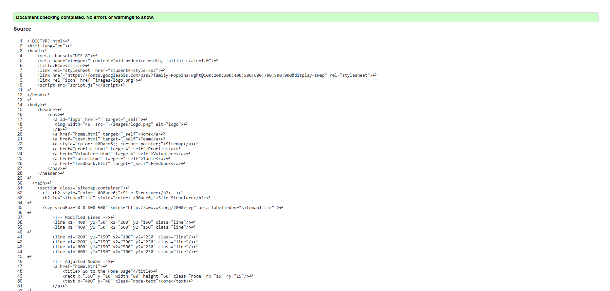
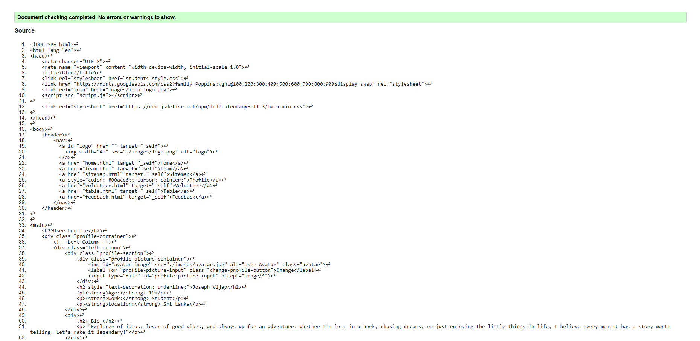
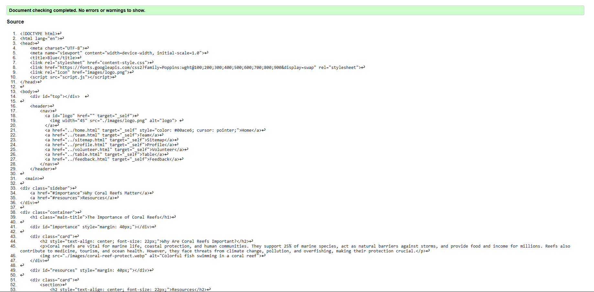

Sitemap Page validation report
Sitemap Validation Report
Back to Page Editor page
Profile Page validation report
Profile page validation report
Back to Page Editor page
Content Page validation report
validated html and css codes for content Page
